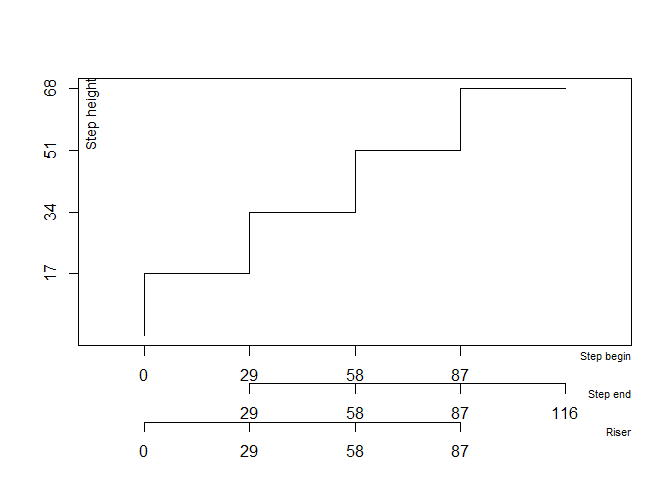
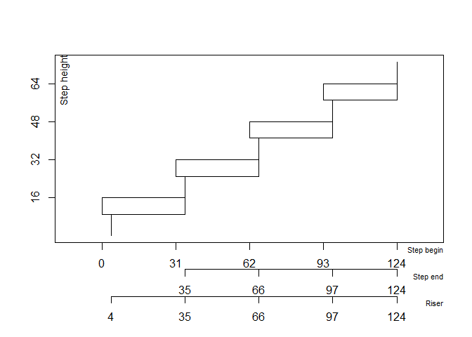
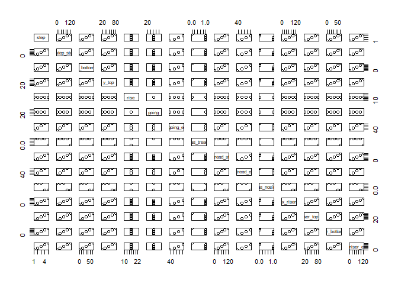

🪜 stairtools is an R package designed to calculate and visualise staircase designs, based on basic architectural constraints. Results are sorted according to a step height optimization, in order to choose easily the best stair dimensioning.
Installation
Install the latest development version from GitHub:
# install.packages("remotes")
remotes::install_github("clement-LVD/stairtools")Preamble and usage
㎝. All dimensions are expressed in centimetres.
Input. The user must indicate a total rise to elevate and a total length available. If length is not a constraint on your project, you can specify a very large value.
Output. The package calculates all possible – reasonable – staircase configurations and return various solutions, i.e. varying numbers of steps and whether or not there is a landing step.
𓊍 The possible solutions are scored according to Blondel’s rule (see below) and the best solution is identified, but you can explore the alternative solutions.
Blondel’s value. A stair geometry follows the Blondel - comfort - relationship.
Where is the rise (vertical riser height), is the going (horizontal tread depth), and is the target Blondel value.
𓊍 In French carpentry and masonry practices for domestic staircase construction, the Blondel ideal value should be 63 cm. It is recommended to prioritise the staircase solution with the smallest deviation from this Blondel target value. From this French point of view, solutions with a Blondel value between 60 cm and 64 cm are acceptable. In the same vein, older French laws therefore stipulate that “the height and width must satisfy the relationship 0.60 m ≤ 2 H + G ≤ 0.64 m” (https://www.legifrance.gouv.fr/codes/article_lc/LEGIARTI000020272650/). Other standards and laws do not specify the permissible Blondel values, or even specify a range of values that differs from the range set out in French law, e.g., UK laws specify permissible Blondel values between 55 cm and 70 cm (https://assets.publishing.service.gov.uk/media/60d5bdcde90e07716f516cfd/Approved_Document_K.pdf). In other words, it is possible to build staircases that complying with British standards but do not comply with French standards.
Some standards apply specifically to a particular type of staircase, e.g., according to the ISO standard, a stair that is a permanent mean of access to machinery require a Blondel value between 60 cm and 66 cm1.
Best solution. Possible solutions are sorted by their deviation from the Blondel target value, default is 63 cm.
Edges cases. When several solutions have a similar Blondel value, solutions are sorted by their deviation from the minimum rise, i.e. 16 cm. This is to ensure that the staircase is comfortable for older people, children and dogs.
Examples
Compute stairs with solve_stairs(), given a total_height and a maximum horizontal run available.
library(stairtools)
sol <- solve_stairs(total_height = 103, max_horizontal_run = 133)
possible_solutions <- sol[sol$is_valid == TRUE, ]
print(possible_solutions)
#>
#> 2 valid solution(s)
#> n_risers step_rise rise_target_deviation going scenario
#> 2 6 17.16667 1.166667 28.66667 no_landing_uniform
#> 5 6 17.16667 1.166667 28.66667 landing_uniform
#> horizontal_run blondel blondel_target_deviation has_landing
#> 2 133 60.93333 2.066667 FALSE
#> 5 133 56.50000 6.500000 TRUE
#> horizontal_run_exceeded landing_impossible is_valid rank
#> 2 FALSE FALSE TRUE 1
#> 5 FALSE FALSE TRUE 2
#> ('geometry' list-col is hidden - access via $geometry[[i]])Find the best solution with best_solution().
sol2 <- solve_stairs(160, 150)
best <- best_solution(sol2)
plot(best$geometry[[1]])
În order to plot a drawing with dimensional measurements, use the show_dimensions = TRUE parameter within plot().
sol3 <- solve_stairs(80, 150)
plot(sol3$geometry[[1]], show_dimensions = TRUE) 
Or use the shortcut function plot_stair_dimensions().
sol3 <- solve_stairs(80, 150)
plot_stair_dimensions(sol3$geometry[[1]])